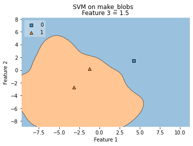
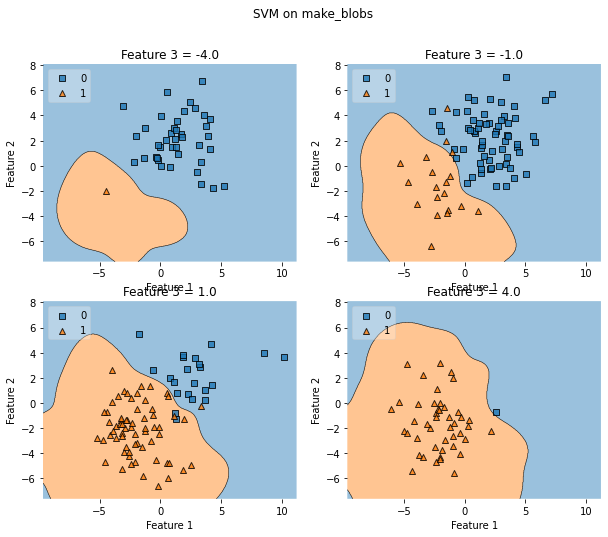

from mlxtend.plotting import plot_decision_regions
import matplotlib.pyplot as plt
from sklearn import datasets
from sklearn.svm import SVC
import pandas as pd
# Loading some example data
X, y = datasets.make_blobs(n_samples=500, n_features=3, centers=[[2, 2, -2],[-2, -2, 2]],
cluster_std=[2, 2], random_state=2)
---------------------------------------------------------------------------
ModuleNotFoundError Traceback (most recent call last)
/var/folders/kl/h_r05n_j76n32kt0dwy7kynw0000gn/T/ipykernel_5632/3943651338.py in <module>
----> 1 from mlxtend.plotting import plot_decision_regions
2 import matplotlib.pyplot as plt
3 from sklearn import datasets
4 from sklearn.svm import SVC
5
ModuleNotFoundError: No module named 'mlxtend'
print(X)
print(y)
[[-1.78293305 -0.56264543 3.32000103]
[-1.12705668 -0.11292487 3.03821111]
[ 1.90444572 3.83444096 0.5516538 ]
...
[-3.56123278 -2.80205379 2.96796493]
[-5.35404282 -3.49805233 -3.02875742]
[-1.30168475 -1.23890228 -1.20462849]]
[1 1 0 1 0 0 0 1 0 0 1 0 0 0 1 0 0 0 0 1 1 0 0 1 1 1 1 0 1 1 1 0 1 0 1 0 1
1 0 0 0 1 1 1 0 1 1 0 1 0 1 1 1 1 0 1 0 0 1 0 1 1 0 0 1 0 0 1 0 0 1 0 1 1
0 0 0 1 0 0 0 1 0 1 0 1 0 1 1 0 0 0 1 0 0 1 0 1 1 0 0 1 1 1 1 1 1 0 1 1 1
1 0 1 1 1 1 1 0 0 0 0 0 0 1 1 1 1 0 0 0 1 0 0 0 0 0 0 0 0 1 1 0 0 1 0 0 1
0 0 1 1 1 1 0 0 0 0 0 0 1 0 0 0 1 0 1 1 0 0 1 1 1 1 0 1 1 0 1 0 0 1 0 0 0
1 1 1 1 0 0 0 0 0 1 0 0 0 0 1 0 0 1 0 1 0 0 0 1 0 0 1 1 1 0 1 0 0 0 0 1 0
1 1 1 0 0 1 1 1 0 1 0 0 1 0 0 1 1 0 1 1 0 1 0 0 0 0 1 1 0 0 1 1 0 0 0 1 0
0 1 0 1 0 0 0 1 1 1 1 0 1 0 1 1 0 0 0 0 0 1 1 0 1 0 0 1 1 0 1 1 0 1 1 0 1
0 1 0 1 0 0 1 0 0 0 0 0 1 1 1 0 1 1 1 0 0 1 1 1 0 0 1 0 0 1 0 0 1 0 0 1 0
0 1 1 1 1 0 0 0 0 0 0 0 1 1 1 1 0 1 0 0 1 0 0 1 0 1 1 0 0 0 0 1 1 1 1 1 0
1 1 1 0 1 1 0 1 1 0 0 0 0 0 0 1 1 1 1 1 0 0 1 1 1 0 0 1 1 1 1 1 0 0 1 1 0
0 1 0 1 0 1 1 0 1 0 0 1 0 1 1 0 1 1 0 0 1 1 1 1 1 0 1 0 0 1 0 0 1 0 1 1 1
1 1 0 0 0 1 0 0 0 0 1 0 1 1 0 0 1 0 1 1 0 1 0 0 1 0 1 0 0 1 0 1 1 1 1 1 1
1 1 0 1 0 1 0 1 0 1 1 0 1 1 0 0 0 1 0 1 0 1 1 1 0 0 1 1 0 1 1 0 1 0 1 0 0
1 0 1 0 1 1 0 0 0 1 1 1 0 0 0 1 0 1 1 1 1 0 1 1 0 0 0 0 1 0 1 1 1 0 0 1 0
1 1 1 0 0 0 0 1 1 1 1 1 1 0 0 1 1 1 0 1 1 0 0 1 0 0 0 1 1 1 0 1 1 0 0 0 0
1 0 1 1 0 1 1 1]
df = pd.DataFrame(X, columns = ['Column_A','Column_B','Column_C'])
df.info()
<class 'pandas.core.frame.DataFrame'>
RangeIndex: 500 entries, 0 to 499
Data columns (total 3 columns):
# Column Non-Null Count Dtype
--- ------ -------------- -----
0 Column_A 500 non-null float64
1 Column_B 500 non-null float64
2 Column_C 500 non-null float64
dtypes: float64(3)
memory usage: 11.8 KB
df.head()
| Column_A | Column_B | Column_C | |
|---|---|---|---|
| 0 | 2.117040 | 2.753092 | -2.270960 |
| 1 | 1.485750 | 1.726043 | 2.324925 |
| 2 | -2.893333 | -1.979647 | 1.697220 |
| 3 | 3.358534 | 1.964679 | -1.527918 |
| 4 | 0.547112 | 0.809976 | 1.553799 |
df.describe()
| Column_A | Column_B | Column_C | |
|---|---|---|---|
| count | 500.000000 | 500.000000 | 500.000000 |
| mean | -0.121473 | -0.100377 | -0.006714 |
| std | 2.831497 | 2.795274 | 2.922949 |
| min | -8.653740 | -6.622297 | -7.030879 |
| 25% | -2.283926 | -2.212662 | -2.169094 |
| 50% | -0.111677 | -0.126294 | 0.046902 |
| 75% | 1.877997 | 1.986583 | 2.362219 |
| max | 10.217385 | 7.100876 | 8.383802 |
# Loading some example data
X, y = datasets.make_blobs(n_samples=600, n_features=3,
centers=[[2, 2, -2],[-2, -2, 2]],
cluster_std=[2, 2], random_state=2)
# Training a classifier
svm = SVC(gamma='auto')
svm.fit(X, y)
# Plotting decision regions
fig, ax = plt.subplots()
# Decision region for feature 3 = 1.5
value = 1.5
# Plot training sample with feature 3 = 1.5 +/- 0.75
width = 0.02
plot_decision_regions(X, y, clf=svm,
filler_feature_values={2: value},
filler_feature_ranges={2: width},
legend=2, ax=ax)
ax.set_xlabel('Feature 1')
ax.set_ylabel('Feature 2')
ax.set_title('Feature 3 = {}'.format(value))
# Adding axes annotations
fig.suptitle('SVM on make_blobs')
plt.show()

df[(df.Column_B < 1.52) & (df.Column_B > 1.48)].sort_values(by='Column_A')
| Column_A | Column_B | Column_C | |
|---|---|---|---|
| 189 | 0.026586 | 1.515462 | -0.185333 |
| 196 | 0.497250 | 1.503713 | -1.812856 |
| 93 | 0.985852 | 1.483901 | -3.871738 |
| 9 | 4.311061 | 1.490939 | -0.962150 |
# Loading some example data
X, y = datasets.make_blobs(n_samples=500, n_features=3, centers=[[2, 2, -2],[-2, -2, 2]],
cluster_std=[2, 2], random_state=2)
# Training a classifier
svm = SVC(gamma='auto')
svm.fit(X, y)
# Plotting decision regions
fig, axarr = plt.subplots(2, 2, figsize=(10,8), sharex=True, sharey=True)
values = [-4.0, -1.0, 1.0, 4.0]
width = 0.75
for value, ax in zip(values, axarr.flat):
plot_decision_regions(X, y, clf=svm,
filler_feature_values={2: value},
filler_feature_ranges={2: width},
legend=2, ax=ax)
ax.set_xlabel('Feature 1')
ax.set_ylabel('Feature 2')
ax.set_title('Feature 3 = {}'.format(value))
# Adding axes annotations
fig.suptitle('SVM on make_blobs')
plt.show()
